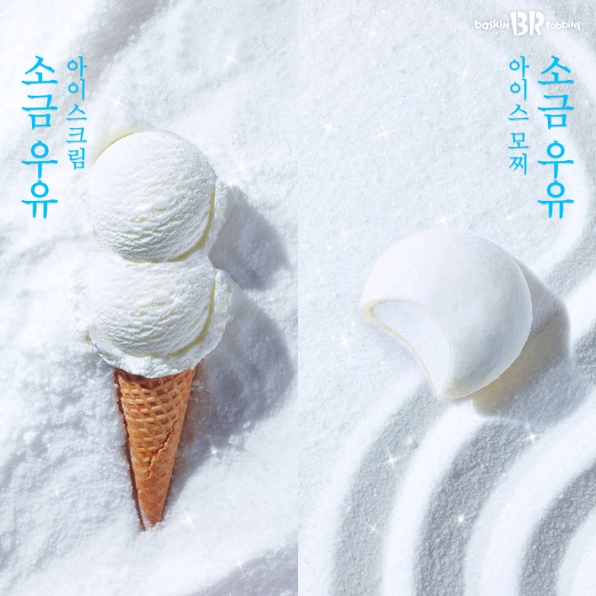

아이스크림(Ice cream)은 우유와 설탕 등 감미료를 혼합하여 얼려 만드는 디저트의 일종이다. 한국에서는 보통 뭔가 얼린 디저트는 싹 다 아이스크림이라고 부르지만, 흔히 아이스크림이라고 하면 떠오르는 소프트크림, 빙수 같은 형태의 셔벗, 단단한 얼음과자인 하드등 여러 종류가 있다. 재료에서도 약간씩 차이가 있다.과자인 하드등 여러 종류가 있다. 재료에서도 약간씩 차이가 있다.과자인 하드등 여러 종류가 있다. 재료에서도 약간씩 차이가 있다.
돼지의 갈비 부근에 붙은 돼지고기 부위를 지칭한다. 지의 갈비 부근에 붙은 돼지고기 부위를 지칭한다. 지의 갈비 부근에 붙은 돼지고기 부위를 지칭한다. 지의 갈비 부근에 붙은 돼지고기 부위를 지칭한다. 이것을 불에 그대로 구우면 삼겹살 구이가 된다. 오겹살도 삼겹살과 완전히 같은 부위다. 껍데기를 제거하지 않은 삼겹살. 자세한 건 여담으로. 비계가 세 겹으로 겹쳐 보이기 때문에 삼겹살로 불린다.생김새를 보면 비계-살코기-비계-살코기 순이다. 배바깥빗근, 배속빗근, 배가로근 이렇게 근육 세 층으로 구성된 배벽을 먹는 것이다. 한국에서는 대부분 삼겹살 구이, 불고기, 김치찌개로 많이 먹는 국민 고기이다.